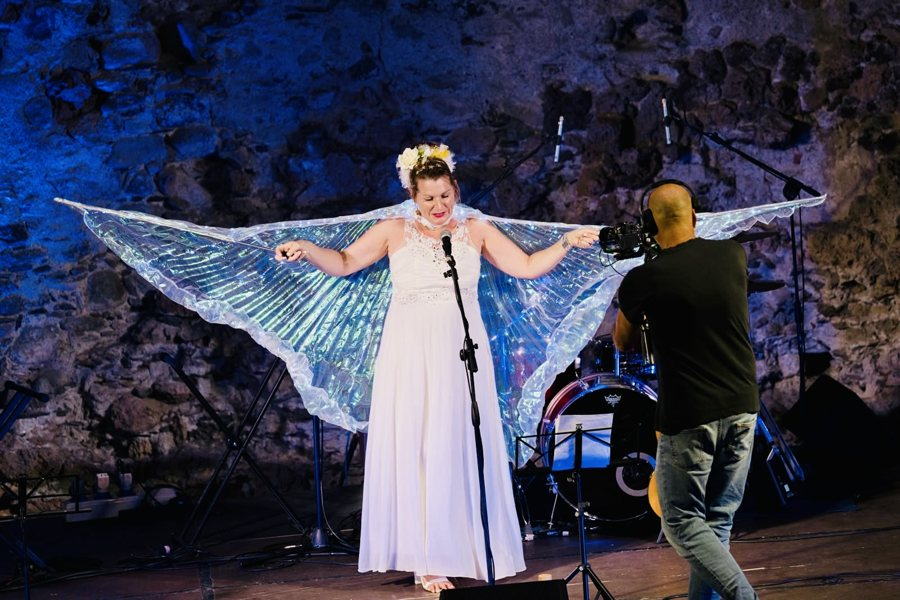

trobairitz niçoise
Titanesque… plusieurs disques et recueils de poésie… une vie de création en indépendante…

Zine, trobairitz libre, féministe et engagée. Elle s’inscrit dans la lignée des trobairitz, ces femmes troubadours du Moyen Âge occitan. Chez elle, le niçois n’est pas un vestige à préserver sous cloche : il est vivant, indocile, ouvert aux rencontres et aux idées. Plus de 150 chansons déposées à la Sacem et distribuées sur les plateformes.
Toutes les chansons de Zine dans un seul objet
La clé USB « L’intégrale de Zine (2002–2026) » : un bon moyen de tout avoir, en soutenant directement l’artiste.
Voir la clé USB